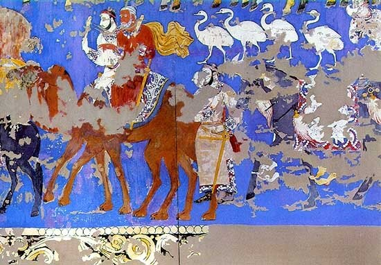
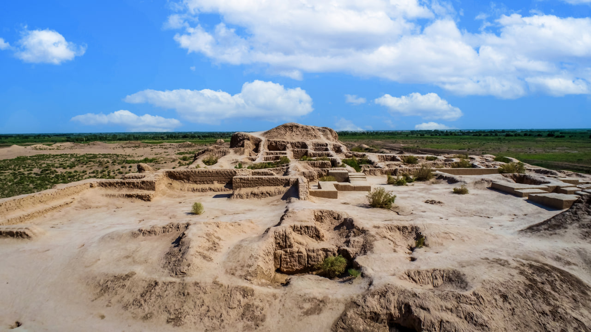
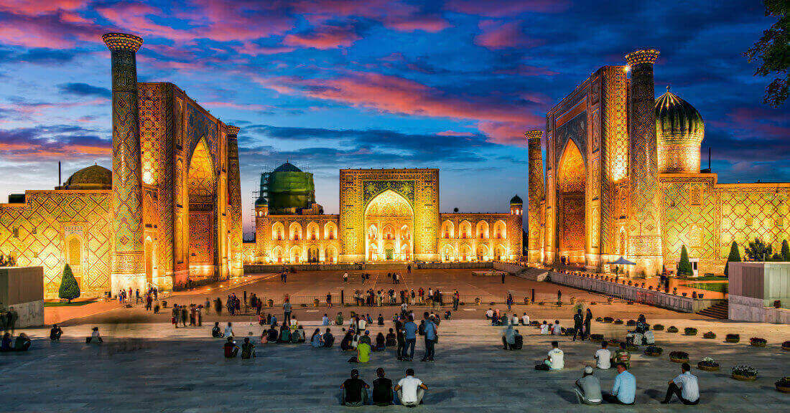
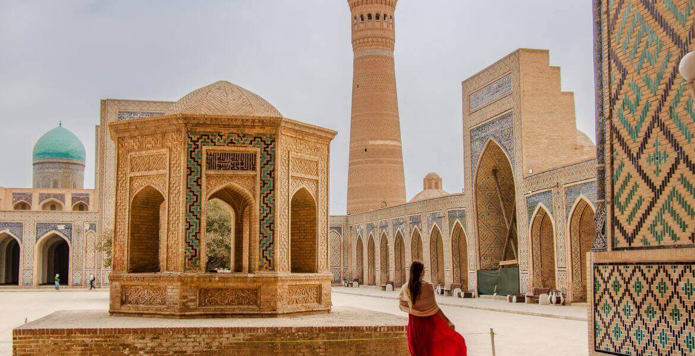
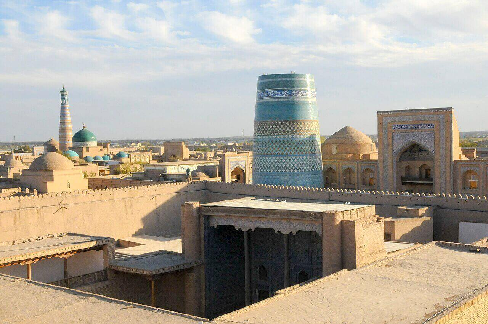
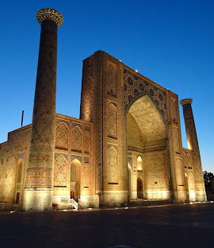
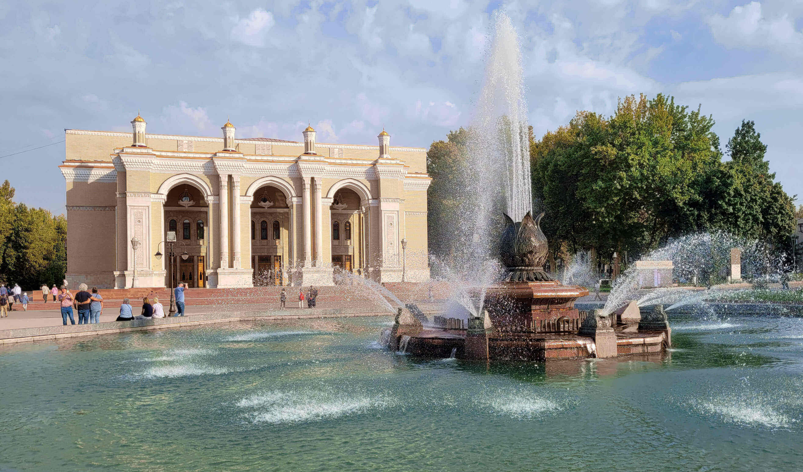
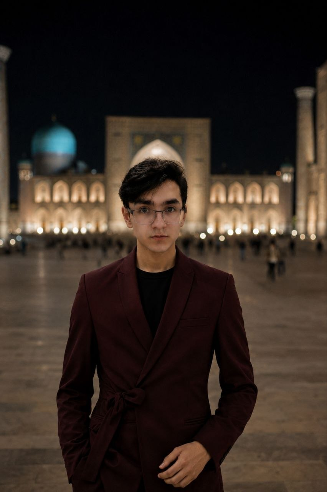

Discover the Real Story
A civilization of science, art, trade & reform — long before the modern world caught up.
Explore History
One of the oldest cities in Central Asia, Afrasiab (proto-Samarkand) was settled as early as the 6th century BC and became a thriving hub of the ancient world.

The ancient Khorezm state, dating back to the 6th century BC, developed sophisticated irrigation systems and a unique script centuries before contact with Greece or Persia.
Sogdiana and Bactria — the heartland of modern Uzbekistan — were among the wealthiest satrapies of the Achaemenid Empire, famed for their merchants and scholars.
Samarkand, Bukhara, and Khiva were not mere waypoints — they were the world's greatest centers of knowledge, trade, and culture for over a millennium.
Zhang Qian opens the route connecting China to the Mediterranean through Uzbek lands.
Sogdian merchants dominate East–West trade; Bukhara becomes a global center of learning.
Samanid dynasty turns Bukhara into the "Athens of the East" — home to Ibn Sina and al-Biruni.
Timur rebuilds Samarkand as the imperial capital of an empire stretching from Turkey to India.

Samarkand

Bukhara

Khiva
The Timurid era was Central Asia's Renaissance — a golden age of architecture, astronomy, poetry, and philosophy. Under Timur and his successors, Samarkand became the most magnificent city on earth.

Before Soviet rule, Central Asia produced its own reform movement. The Jadids were Muslim intellectuals who championed education, press freedom, women's rights, and secular governance — a story rarely told in Western history books.
Jadids reformed Islamic education, introducing phonetic teaching, science, and modern languages into traditional maktabs across Bukhara and Samarkand.
Writers like Abdulla Qodiriy and Fitrat produced plays, novels, and newspapers calling for national awakening — and paid for it with their lives under Stalin.
Jadids demanded constitutional rule and women's education years before the Bolsheviks arrived — a fact Soviet historiography deliberately erased.

The Soviet period reshaped Uzbekistan's borders, identity, and culture — often violently. Yet it also brought mass literacy, industrialization, and a generation of scientists and engineers.
Since independence, Uzbekistan has been rediscovering its identity. After decades of isolation, reforms since 2016 have opened the country to the world — but the deeper story goes far beyond politics.
1394–1449
Sultan and astronomer who catalogued 1,018 stars with unprecedented accuracy — a century before Tycho Brahe.
980–1037
Born near Bukhara, his Canon of Medicine was a standard European medical textbook for 600 years.
973–1048
From Khorezm, he calculated Earth's circumference with stunning accuracy and pioneered comparative anthropology.
780–850
From Khiva, he invented algebra and gave us the word "algorithm" — the father of modern computing.
1441–1501
Poet, statesman and linguist who proved Turkic languages could equal Arabic and Persian in literary beauty.
1894–1938
Uzbekistan's first modern novelist, shot by Stalin. His works survived in secret and are now national treasures.
"Uzbekistan is just a former Soviet republic with no distinct history."
Uzbekistan's cities are older than Rome. Samarkand was a world capital when London was a small trading post.
"Timur (Tamerlane) was only a destroyer and conqueror."
While brutal in war, Timur was also the greatest architectural patron of his era, building hospitals, libraries, and the most beautiful mosques in the world.
"Islam and science are incompatible."
Medieval Uzbekistan's Muslim scholars invented algebra, advanced medicine, mapped the stars, and preserved Greek knowledge that Europe had lost.
The Scientific Legacy: Built between 1424 and 1429 in Samarkand, this structure was more than an observatory; it was a massive, specialized precision instrument. It served as the hub of the Timurid Renaissance, where scholars calculated the length of the sidereal year to be 365 days, 5 hours, 49 minutes, and 15 seconds—an error of less than a minute compared to modern satellite data.
Read more →Architectural Philosophy: Located in the heart of Bukhara, this 10th-century monument represents a profound departure from the flat, two-dimensional aesthetics of the early medieval period. It is the first structure in Central Asia to employ "three-dimensional" brickwork, where the bricks are not just a building material, but a medium for complex light-and-shadow geometry.
Read more →A Vision for Modernity: The Jadid movement (from the Arabic usul-i jadid, or "new method") was a grassroots intellectual revolution that sought to modernize the social and educational fabric of Central Asia. They were not merely educators; they were nation-builders who founded the first modern theaters, introduced the concept of secular journalism, and argued that national prosperity was impossible without universal education for both men and women.
Read more →The Scientific Legacy: Built between 1424 and 1429 in Samarkand, this structure was more than an observatory; it was a massive, specialized precision instrument. It served as the hub of the Timurid Renaissance, where scholars calculated the length of the sidereal year to be 365 days, 5 hours, 49 minutes, and 15 seconds—an error of less than a minute compared to modern satellite data.
Read more →The Scientific Legacy: Built between 1424 and 1429 in Samarkand, this structure was more than an observatory; it was a massive, specialized precision instrument. It served as the hub of the Timurid Renaissance, where scholars calculated the length of the sidereal year to be 365 days, 5 hours, 49 minutes, and 15 seconds—an error of less than a minute compared to modern satellite data.
Read more →The Scientific Legacy: Built between 1424 and 1429 in Samarkand, this structure was more than an observatory; it was a massive, specialized precision instrument. It served as the hub of the Timurid Renaissance, where scholars calculated the length of the sidereal year to be 365 days, 5 hours, 49 minutes, and 15 seconds—an error of less than a minute compared to modern satellite data.
Read more →
I am a historian and writer with a deep passion for the history and culture of Uzbekistan. For many years, I have researched forgotten historical figures, ancient cities, and written historical sources.
The purpose of creating Hidden Uzbekistan is to introduce Uzbekistan to a global audience not merely as a post-Soviet country, but as a civilization that has been a center of science, trade, and culture for centuries.